37 items in 7 issue sections:
2005 |
 |
February 1, 2006 | |
| Number 37 (December 2005) | Timeless Truths Publications, 2005 | Perseverance | |
Snip! Snip! The proud vine is pulled off the wall. There, I have cut it down and it won't bother our raspberries again! you say. You must not know brambles. Cutting it down is not enough—we must now get out our shovels and dig out the root or it will grow back. | ||
| 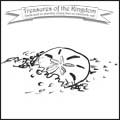 | December 17, 2005 | |
| Number 36 (September 2005) | Timeless Truths Publications, 2005 | Humility | |
Daniel rolled his eyes and walked off. I don't like Robert and I don't want to be his friend, Daniel thought. I guess I'm really prejudiced. Maybe if I found a box of Robert's drawings I would burn them. Hitler burned people's things. Daniel frowned. | ||
 |
May 19, 2005 | |
| Number 35 (April 2005) | Timeless Truths Publications, 2005 | Prayer | |
"Candy?" Spiteful looked surprised. He pulled the silver case out of his pocket and turned it over in his dirty hands. "Open it like this, see?" Precious said, unsnapping the case. The peppermint stick rolled out.... "It's for you. I hope you like it," Precious said quietly. | ||
 |
March 1, 2005 | |
| Number 34 (February 2005) | Timeless Truths Publications, 2005 | Forgiveness | |
Suddenly the quiet of the room was broken by the bark of Fred's dog, Watch. Slave hunters had tracked us to this very place! ...The rough men searched the house below. The peace of the night had disappeared and danger was very near. | ||
2004 |
| 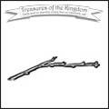 | January 1, 2005 | |
| Number 33 (December 2004) | Timeless Truths Publications, 2004 | Light | |
"They must be real heroes," said Edward. Grandpa chuckled. "Heroes? I should say that they were ordinary people that found an extraordinary source of power. But God has that same power to overcome your enemies, if you will put your faith in Him." | ||
 |
October 16, 2004 | |
| Number 32 (October 2004) | Timeless Truths Publications, 2004 | Humility | |
Daniel felt trapped. If he said Jesus was his Captain, Dad would ask why he hadn't been sharing. But it didn't seem fair to share a personal refuge. He didn't want to be selfish, really. "I don't know," he muttered. "I just wanted to be by myself." | ||
| 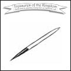 | August 1, 2004 | |
| Number 31 (July 2004) | Timeless Truths Publications, 2004 | Examination | |
How do you think you can show that you love God? Not by saying things with your lips. Anyone can do that. Think instead about saying things with your hands and feet today. Will you give God your time and energy and please Him in every way you can? | ||
 |
May 9, 2004 | |
| Number 30 (May 2004) | Timeless Truths Publications, 2004 | Obedience | |
Taylor lived on a farm. He and his brother, Antonio, had the greatest places to play! There were bushes and trees and blackberry vine thickets. And all over were little paths that Taylor and Antonio had made. "Don't get in the poison oak plants," Taylor said. | ||
| 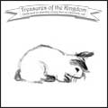 | March 22, 2004 | |
| Number 29 (March 2004) | Timeless Truths Publications, 2004 | Kindness | |
I think this little bunny has a good lesson to teach us. If we pulled a baby rabbit out of the pile of fur, it would be sure to crawl right back in. Even though it is only a tiny blind baby, it knows to stay where it is warm and safe. | ||
 |
January 14, 2004 | |
| Number 28 (January 2004) | Timeless Truths Publications, 2004 | Giving | |
Determine to always do the right thing, for Jesus. When you feel like stopping, do a little more. Give all your problems and the praise of others to Jesus for baking. When the trials of disappointment and troubles come to test you, pour on a little unselfishness. | ||
2003 |
| 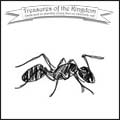 | November 18, 2003 | |
| Number 27 (November 2003) | Timeless Truths Publications, 2003 | Love | |
The bicycle seat just fit them both, but it was hard to keep balanced. It wavered back and forth down the driveway.... Suddenly the pedals jammed and the bike screeched and fell over. Rosie's elbow hurt, but Emma was screaming like her leg was broken. | ||
| 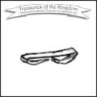 | September 21, 2003 | |
| Number 26 (September 2003) | Timeless Truths Publications, 2003 | Love | |
Terry noticed a brush pile next to the lawn. There were probably snakes living in it, Terry thought.... "Miss Richardson," said Terry, "there are snakes in that pile of brush!" "Terry," Miss Richardson replied, "the only snake around here is the one in your ear!" | ||
 |
July 13, 2003 | |
| Number 25 (July 2003) | Timeless Truths Publications, 2003 | Assurance | |
"Rats. They are chewing on something," said Precious. "I'm going to see what it is." She turned the door handle and poked her head into the dark room. The scratching stopped. "Get a flashlight," she whispered to her brother. | ||
 |
May 3, 2003 | |
| Number 24 (April 2003) | Timeless Truths Publications, 2003 | Obedience | |
"You've ruined it!" Justin screamed, and threw himself down to pound the dirt. Teddy was crying and Rochelle was calling for help. Justin didn't listen. The go-cart that he had worked so hard to build was smashed! Tears blinded his eyes. | ||
| 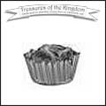 | March 1, 2003 | |
| Number 23 (February 2003) | Timeless Truths Publications, 2003 | Responsibility | |
God made the world and all that is in it for a reason. He made us on purpose. When I do something "on purpose," I have a plan and a reason to do it. God has a plan and a reason for us. He wants us to walk with Him and be with Him, just like Jesus was. | ||
 |
January 10, 2003 | |
| Number 22 (January 2003) | Timeless Truths Publications, 2003 | Humility | |
Daniel was tired of his talking, and disappointed that he had spotted the ripped bark first. "Just be quiet a bit," he grumbled. "You're scaring all the animals." Just then he noticed a large, rounded shape in the snow and pulled out his track guide. Could it be...? | ||
2002 |
| 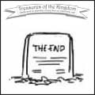 | August 12, 2003 | |
| Number 21 (October 2002) | Timeless Truths Publications, 2002 | Contentment | |
"Don't you think it would be better to keep busy trying to serve others, rather than getting into trouble for being a pest?" Grandpa said to Edward, his eyes twinkling. "God is pleased when we do hard things patiently. He will help us be kind when others are cross." | ||
| 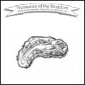 | December 20, 2003 | |
| Number 20 (August 2002) | Timeless Truths Publications, 2002 | Giving | |
A scientist is someone who studies the world God has made. Scientists want to find out how and why things work.... So let's be a scientist and study things in the King's Garden today!... Scientists begin with a question. Our question today is: What can weeds tell us? | ||
 |
December 15, 2003 | |
| Number 19 (June 2002) | Timeless Truths Publications, 2002 | Obedience | |
"She can draw cool people, too," said Janice. "Last week she won a prize in our church fair." "I'm going to be a movie artist when I grow up," said Juliann. "Hey Jan, can I see your new movie-star Barbie?" Janice pulled a shiny box out of the closet. | ||
 |
December 6, 2003 | |
| Number 18 (April 2002) | Timeless Truths Publications, 2002 | Warfare | |
Precious felt very pleased with herself when she had finished the sleeve. "I don't think I need Mother Matron's help at all.... It will be a surprise to show her how much I've done."... The fabric didn't meet at the edge, but a quick scissors snip took care of that. | ||
 |
November 10, 2003 | |
| Number 17 (February 2002) | Timeless Truths Publications, 2002 | Trust | |
"I don't like waiting," Edward said. "Why can't we try the cookies now, Alice?" "They're not ready yet," his sister said, sliding the tray in the oven. Grandpa chuckled from his easy chair. "How about a story while we wait for them to bake?" | ||
2001 |
 |
October 27, 2003 | |
| Number 16 (December 2001) | Timeless Truths Publications, 2001 | Sin | |
Daniel pretended not to notice when Chad... began looking over the new Pigeon-Raiser's Guide. I really don't care, anyway, he told himself, and began poking at the fire. Dad sat down in a nearby chair. "So, Daniel, how did your pigeons like their new loft?" | ||
 |
October 22, 2003 | |
| Number 15 (November 2001) | Timeless Truths Publications, 2001 | Trust | |
"I don't think you really want this kind of doll, Precious. Even though it's cheap, it's not worth the money." Self-pity tears filled Precious' eyes. "But Mama... I love her, I really do. I don't care if she's got a broken finger. And I have the money... she's on sale...." | ||
 |
October 12, 2003 | |
| Number 14 (September 2001) | Timeless Truths Publications, 2001 | Sin | |
Juan was impatient. "Coco, you must hurry or we will never get done," he said sharply. But the little burro only plodded. "Get off and walk, Lucita," Juan said. "You are probably too heavy for him when it is so steep." So Lucita walked behind, holding the red scarf tightly. | ||
| 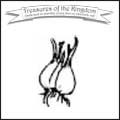 | October 6, 2003 | |
| Number 13 (June 2001) | Timeless Truths Publications, 2001 | Warfare | |
It stood before her now, tall and mysterious. What could be so dangerous about it? Broken bricks lay piled in the grass near the window, and as Rosie stepped closer she felt a cool breeze brush her face. What treasure was hidden behind those dark walls? | ||
 |
September 27, 2003 | |
| Number 12 (April 2001) | Timeless Truths Publications, 2001 | Grace | |
"There he comes again," said Annie. "He walks this way and seems to be looking for something. He walks slow, and is without his hat. He puts his hand to his head, as if he did not know what to do. Oh, sister, he has gone in again; what shall we do?" | ||
 |
September 8, 2003 | |
| Number 11 (February 2001) | Timeless Truths Publications, 2001 | Truth | |
Though Rosie tried to enjoy playing with her little brother and sister, she could not. Every little bang or call made her jump and sent her heart into a flutter. What if someone had seen her when she had stepped on the dresser this morning and knocked the pitcher off? | ||
2000 |
 |
August 30, 2003 | |
| Number 10 (December 2000) | Timeless Truths Publications, 2000 | Trust | |
Don't you know that there are lots of times it is hard to be cheerful and kind? It is like a stormy winter day when plants don't want to grow.... But Jesus has a way for us to "sprout" on those stormy winter days. | ||
| 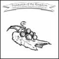 | August 22, 2003 | |
| Number 9 (October 2000) | Timeless Truths Publications, 2000 | Decision | |
Precious... tossed on her crown of love, but didn't have time to adjust her veil of quietness.... Princess Kind-to-All had planned a party and Precious didn't want to be late. She bounded down the steps... and did not notice her ring fall to the floor. | ||
| 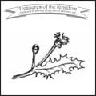 | August 2, 2003 | |
| Number 8 (August 2000) | Timeless Truths Publications, 2000 | Examination | |
"Push," said Josh. Timothy sighed. He pushed Josh a little bit. "More," said Josh. Then a thought came to Timothy. If he pushed Josh very hard, Josh might get scared. He would cry. He would want to go to Mother. And Timothy could play by himself! | ||
 |
May 31, 2003 | |
| Number 7 (June 2000) | Timeless Truths Publications, 2000 | Love | |
"Won't fight, huh." Eric gave his twisted arm a yank which brought another cry of pain from Johnny. "When I tell you to fight, you better fight! Or you’ll wish you had," he continued grimly. Peter laughed with glee. "Get him, Eric. He's too scared to fight!" | ||
| 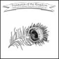 | May 24, 2003 | |
| Number 6 (April 2000) | Timeless Truths Publications, 2000 | Decision | |
The next day a strange thing happened. God had always taken care of them so that they always had food to eat, even during the hard times of the war. But now no money came in the mail and hardly any food was sent.... Soon they were very hungry. | ||
 |
May 17, 2003 | |
| Number 5 (February 2000) | Timeless Truths Publications, 2000 | Contentment | |
If seedlings don't get light, they will start looking for it, because light is what helps them grow. In the Bible, Jesus is called our Light. If we don't come close to Him each day, we won't grow in our hearts like we should. | ||
1999 |
| 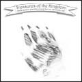 | May 10, 2003 | |
| Number 4 (December 1999) | Timeless Truths Publications, 1999 | Love | |
As he helped his father get ready for the feast, Ethan kept wondering who the Rabbi was after all. While they were working on their booth, he got up the courage to ask, "Father, do you really think the Rabbi is the Messiah? Is he our conqueror, or not?" | ||
 |
April 26, 2003 | |
| Number 3 (October 1999) | Timeless Truths Publications, 1999 | Work | |
Rosie felt a small smile creep onto her face. Maybe this would be fun after all! She quickly picked up a jar and looked at its dusty bottom. "And we must remember," she said, as most grown-up as she could, "that the king doesn't like one speck of dirt!" | ||
| 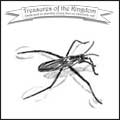 | April 12, 2003 | |
| Number 2 (August 1999) | Timeless Truths Publications, 1999 | Giving | |
As Daniel watched her turn sadly away, his memory verse came back to mind.... If Rosie had the new pole, he thought, I would want her to share with me. Daniel looked at his little fish and bit the corner of his lip. Jesus would want me to share. | ||
 |
December 4, 2002 | |
| Number 1 (June 1999) | Timeless Truths Publications, 1999 | Trials | |
But Irene didn't listen. "Hurry now! Mom said she needed us to get the weeding done this afternoon. You can pick flowers later." Rosie turned quickly to hide the tears that were rolling down her cheeks. Irene didn't understand! It just wasn't fair! | ||